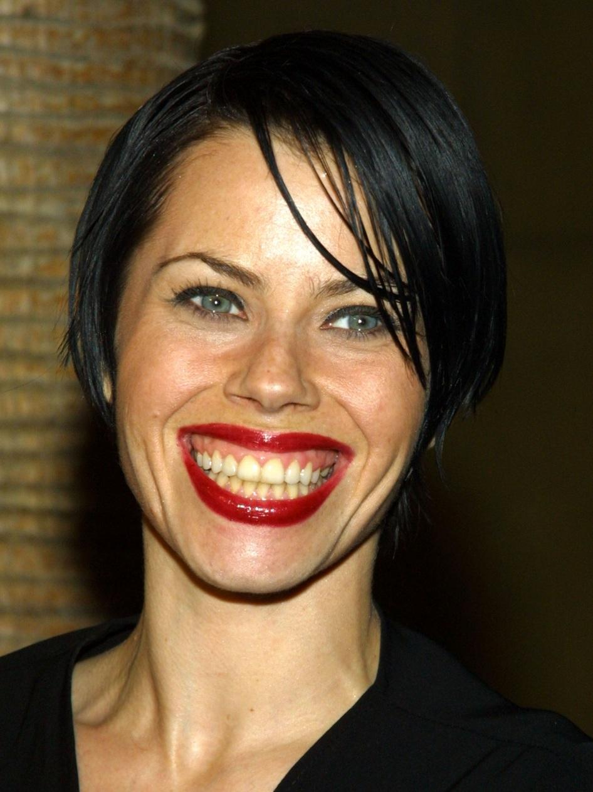

Main cast members include: Neve Campbell, Rachel True, Fairuza Balk and Robin Tunney

85 different actresses screen-tested for the four main roles, including Angelina Jolie and Alicia Silverstone, who had just completed Clueless. Rachel True and real-life Wiccan Fairuza Balk were the first to be cast in their respective roles. The character of Rochelle was re-written when True was cast to be African-American, incorporating a racism subplot as the character's major conflict.
Robin Tunney was initially cast in the role of Bonnie, but the producers decided she would be better in the starring role of Sarah, which she was persuaded to accept despite preferring the former. Neve Campbell, the most well-known of the four actresses for her role on Party of Five, was then cast as Bonnie. Tunney had shaved her head for her role in Empire Records and had to wear a wig throughout filming.
Production enlisted a real-life Wiccan named Pat Devin to act as on-set adviser for the film. She wrote the incantations used and ensured that the treatment of the Wiccan subject-matter was as accurate and respectful as possible.